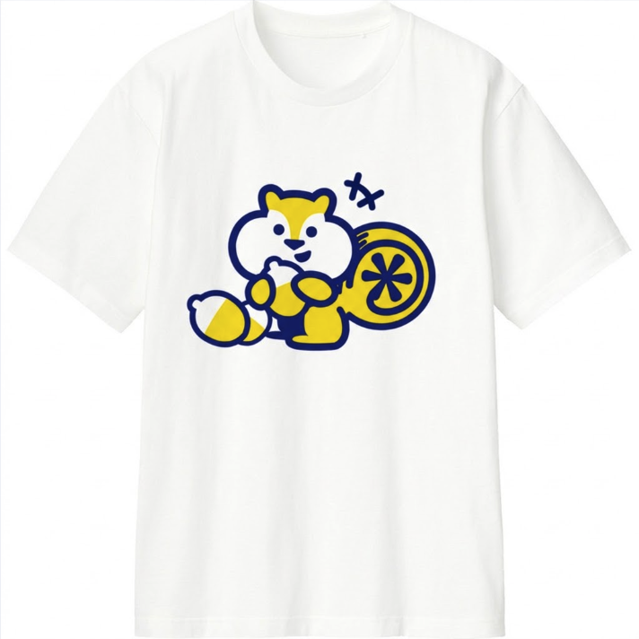
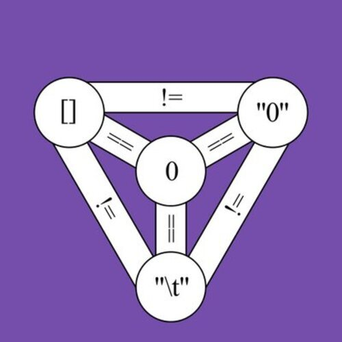
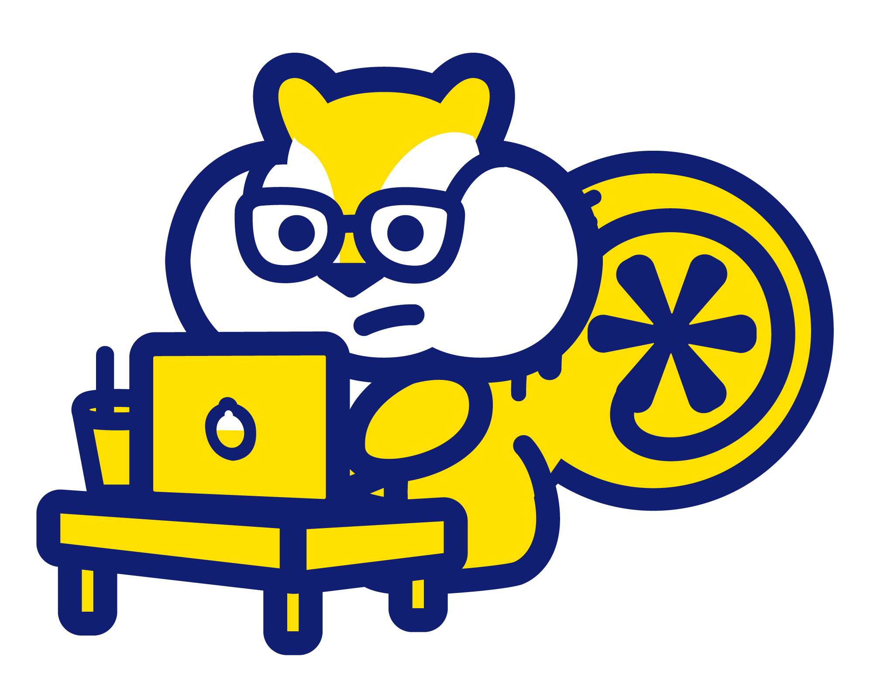
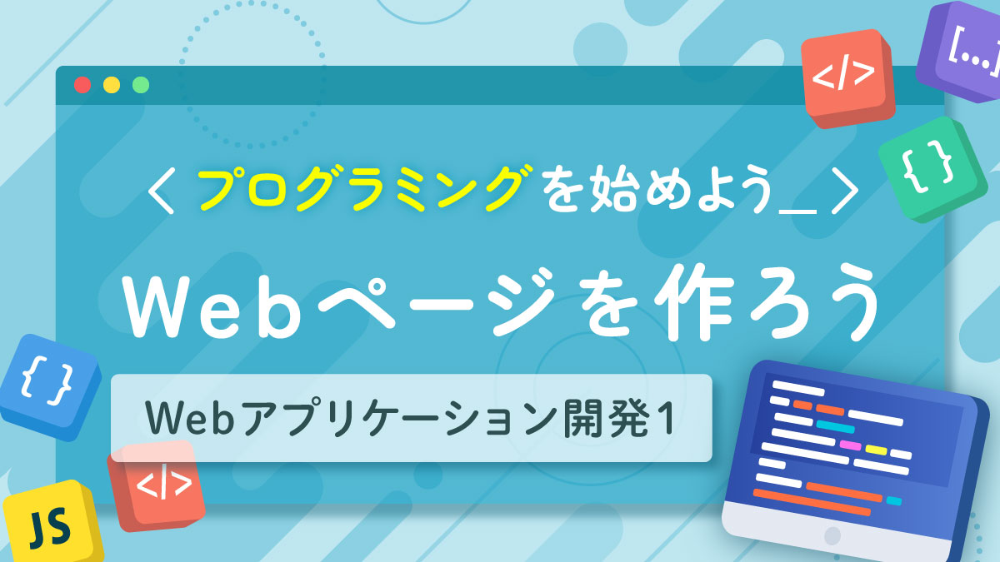
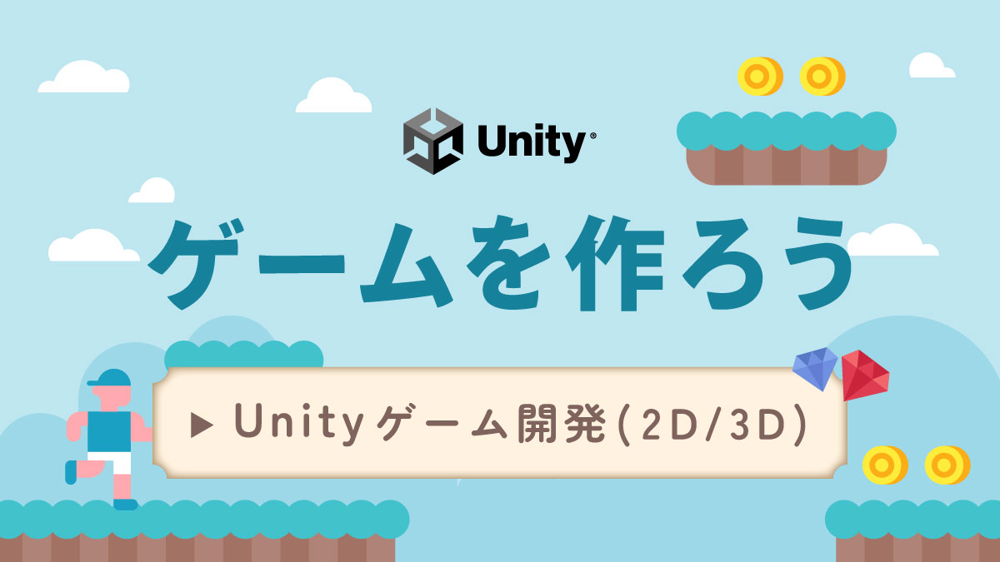
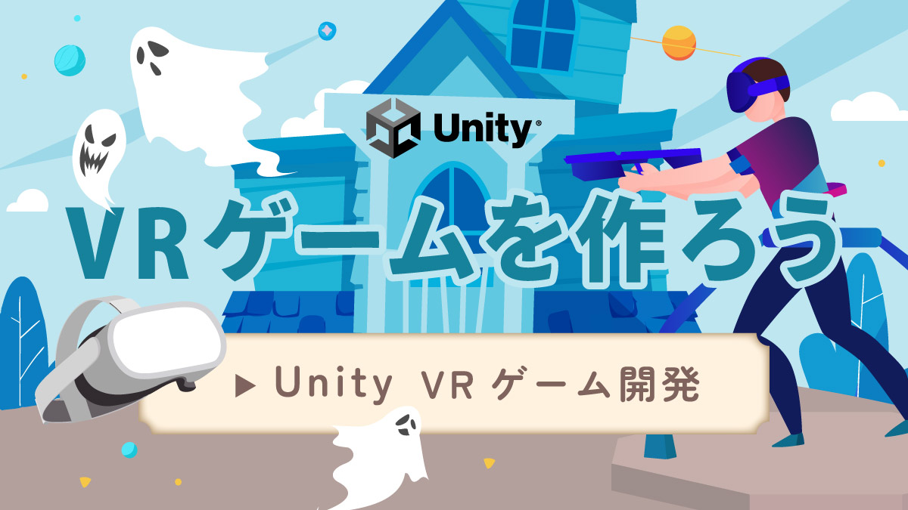
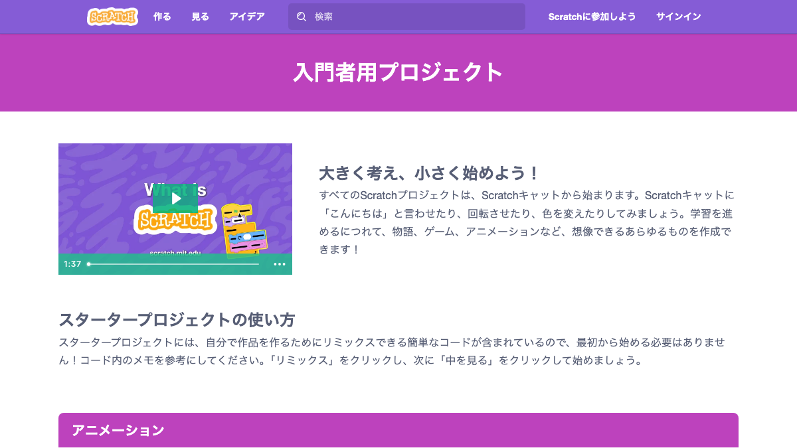

Webページ部門
Unity部門
Scratch部門
応募規定
- クライアントサーバシステムの Web アプリケーションであること
-
サーバーサイドの実装量は問いませんが、必ず HTTP リクエストを処理するコードを実装してください。
ホスティング先は自由です。おすすめは Render です。公開手順はWebアプリケーション開発コース3 第4回「Render で Web サービスを公開」で学べます。
- Unityで制作された作品であること
- Unityで制作した作品を応募してください。
- Scratchで制作された作品であること
- Scratchで制作した作品を応募してください。
- 作品の紹介動画を提出すること
-
作品の内容や操作方法を音声で説明した紹介動画の提出が必須です。説明の音声には、合成音声も使用できます。長さは2分程度を目安にしてください。動画のサイズは問いません。
応募フォームから動画を提出するか、SNSに投稿した動画のURLを送ってください。
- AIを利用した場合は、利用したAIの種類と利用箇所を明記すること
- 応募時に、どのAIを使い、作品制作のどの箇所で使ったかを必ず記載してください。
- ZEN Study有料会員・ZEN大学生・N高グループ生・N中等部生のいずれかであること
- ZEN Study有料会員・ZEN大学生・N高グループ生・N中等部生のいずれかに該当する方が応募できます。 ご自身の所属に合った応募フォームを選んでください。
- コードの提出は GitHub リポジトリの URL を提出すること
- リポジトリの公開設定は Public で作成してください。
- Unityパッケージをアップロードし、共有 URL を提出すること
-
作品のプロジェクトファイルをUnityパッケージ（.unitypackage）として、GitHub の Public リポジトリまたはGoogle ドライブにアップロードし、その URL を応募フォームに記載してください。提出は必須です。
審査員がプロジェクトファイルをダウンロードして確認できる共有設定にしてください。
- 動作確認ができる URL を提出すること
-
応募作品のアプリケーションをホスティングし、アプリケーションの URL を提出してください。
提出しているコードと同じ動作となるようにしてください。
- 動作確認できる URL を提出すること
-
審査期間中に作品の動作を確認できる URL を提出してください。
審査期間中に確認できる状態を維持してください。
- 一定以上のオリジナリティがあること
- 教科書やWebサイトにあるものを作ってそのまま提出したものや、少し変えただけのものは審査の対象となりません。
- 著作権上問題のないメディアファイル、コードのみで構成されていること
- 自作でない画像やライブラリを利用する際は、該当コンテンツのライセンスを十分に確認してください。
- 世の中で広く利用されているプログラミング言語であること
- 自作言語・擬似言語・実用性のない言語は不可とします。
- 作品は審査期間中、 Google Chrome ブラウザで正常に動作すること
- 審査は PC 版・スマートフォン版の Google Chrome ブラウザにて行われます。
- 応募作品は公開される可能性があるため、それに了承できること
-
応募作品のコード、アプリケーションの URL、紹介動画などは結果ページにリンクが貼られ、プログラミングの授業などにて紹介されます。
授業での表彰および紹介が終わるまでは、提出物の公開・共有状態を維持してください。 Webアプリケーションのホスティングも同じ期間継続してください。
- 審査期間中のコードの管理
-
審査期間中のコード変更は禁止しませんが、バグなどが含まれると評点が下がる可能性があります。
審査用にブランチを分けておくと管理がしやすいです。
- 開発に使う言語・フレームワークの参考
-
ZEN Studyプログラミングコースでは、世の中で広く利用されているプログラミング言語として、JavaScript（TypeScript）、Scala、Python、Golang、Swift、Kotlin を学ぶことができます。
Hono をはじめとした Web フレームワークを利用することをオススメします。
- 作品の評価について
- ゲーム性や表現力、操作性に加えて、コーディングも評価します。 アイデアや完成度、遊びやすさに加えて、コーディングも評価します。
賞・賞品
Webページ部門の賞 Unity部門の賞 Scratch部門の賞
ZEN Study ユーザー
- 最優秀賞
- 1名
- 賞品は
現在選定中です - 特別賞
- 複数名
- 健闘賞
ZEN大学
- 最優秀賞
- 1名
- 賞品は
現在選定中です - 優秀賞
- 2名
- 賞品は
現在選定中です - 健闘賞
角川ドワンゴ学園N高グループ・N中等部
- 最優秀賞
- 1名
- 賞品は
現在選定中です - 優秀賞
- 2名
- 賞品は
現在選定中です - のびしろ∞で賞
- 3名
- 賞品は
現在選定中です - 健闘賞
- 最優秀賞 1名
- 部門で最も優れた作品
- 賞品は
現在選定中です - 優秀賞 複数名
- ゲーム性や表現力に優れた作品アイデアや完成度に優れた作品
- 賞品は
現在選定中です - 健闘賞
- 制作での頑張りが特に認められた作品
視聴者特別賞 全部門を通じて1名
ほかの賞を受賞していない作品のうち、結果発表特番で視聴者から多くの票を集めた作品を表彰します。
賞品アスタリスくんTシャツ

記念品
応募フォーム
ZEN大学の学生、角川ドワンゴ学園の生徒のみなさんへ。必ず自分の所属先のフォームから応募してください！
ZEN Study ユーザー
ZEN大学
角川ドワンゴ学園
N高グループ・N中等部
全所属共通
全所属共通
評価項目
- コーディング
- 設計
-
- ファイル/フォルダが整理されているか
- コードが見やすく整理されているか
- 必要なコメントが記述されているか
- GitHub を有効に活用できているか
- ライブラリやフレームワークを活用できているか
- ブロックが整理され、処理の流れを追いやすくなっているか
- 変数、リスト、メッセージ、定義ブロックなどの名前から、その役割が伝わるか
- 変数やリストを適切に活用し、データを効率的に管理しているか
- 定義ブロックを活用するなど、処理の共通化・モジュール化ができているか
- メッセージやクローンなど、Scratch特有の機能を効果的に活用しているか
- シーンの階層や Prefab が整理され、手を加えやすく作られているか
- 画面遷移やデータ受け渡し、素材・フォルダ構成に無理がなく拡張しやすいか
- 役割分担や処理の流れがまとまり、スクリプトの分け方や工夫が伝わるか
- 完成度
-
- バグや動作不良などはないか
- 攻撃可能な脆弱性はないか
- UI/UX が洗練されているか
- テストコードが書かれているか
- 操作感や当たり判定、演出に違和感がないか
- 最後まで通して遊べ、画面サイズや重さにも配慮されているか
- 作ユーザーの操作に対する反応が適切で、快適に操作できるか
- 作品を繰り返し実行した場合や、想定外の操作をした場合にも適切に動作するか
- 作作品全体が細部まで作り込まれ、意図した機能や表現が十分に実現されているか
- アイデア
-
- 作品のテーマ・アイデアが新しいか
- オリジナリティのあるアイデアかどうか
- 機能や実装に独創性があるか
- 時世やトレンドを取り入れているか
- デザインに創意工夫があるか
- 実際に使われていてユーザーが付いているか
- 作品のテーマや着眼点に新規性・独自性があるか
- Scratchの機能や制約を踏まえた創意工夫があるか
- 時世やトレンドを取り入れているか
- デザインや演出に創意工夫があるか
- ユーザーに価値を提供する作品になっているか
加点ポイント
-
AIを利用せずにアルゴリズムに工夫を凝らしたプログラム（作品内の一部でも可）
作品の一部でも、AIを使わずに自分で考えて実装した工夫を評価します。特にがんばったところは応募フォームでアピールしてください。
-
コンテスト用に新しく作られた作品
今回のコンテストに向けて新しく制作した作品は、加点の対象です。温めていたアイデアを、ぜひこの機会に形にしてみてください。
-
初めて利用するユーザでも理解できる作品
初めての人が直感的に使える作品はもちろん、作品内に使い方の説明やチュートリアルを用意している場合も加点します。
過去作品
審査員

制作の参考授業・教材


Webアプリケーション開発1〜4
Webアプリケーションの制作方法は、ZEN Studyの「Webアプリケーション開発1〜4」で学ぶことができます。ZEN大学の同名科目と同等の内容です。


ZEN Study Unity VRゲーム開発
VR ゲーム制作に必要な知識を身につけられるZEN Studyの教材です。Oculus Quest 2 でプレイできる VR ゲームを制作しながら学習します。
プロジェクトを見る